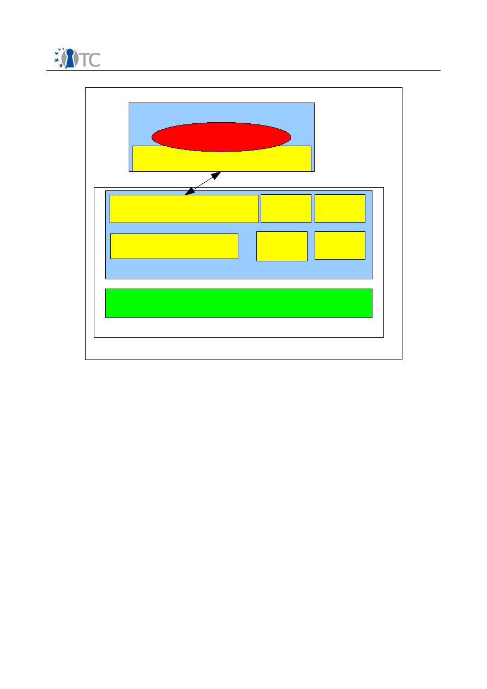

D04.1 Basic Management Interface
Project number
IST-027635
Project acronym
Open_TC
Project title
Open Trusted Computing
Deliverable type
Report
Deliverable reference number
IST-027635/D04.1/
1.0
Final
Deliverable title
Basic Management Interface
WP contributing to the deliverable
WP4
Due date
Apr 2006 - M06
Actual submission date
Jun 12 2006
Responsible Organisation
HPLB
Authors
HPLB (David Plaquin, Chris Dalton, Dirk
Kuhlmann)
TUD (Bernhard Kauer, Carsten Weinhold)
CUCL (Steven Hand, Steve Kell)
RUB (Rainer Landfehrmann)
Abstract
Definition of the Basic Management Interface
requirements and first draft of an actual API.
Keywords
BMI, BMI requirements, API
Dissemination level
Public
Revision
1.0 Final
Instrument
IP
Start date of the
project
1
st
November 2005
Thematic Priority
IST
Duration
42 months
Basic Management Interface
Final
If you need further information, please visit our website
www.opentc.net
or contact
the coordinator:
Technikon Forschungs-und Planungsgesellschaft mbH
Richard-Wagner-Strasse 7, 9500 Villach, AUSTRIA
Tel.+43 4242 23355 –0
Fax. +43 4242 23355 –77
Email
coordination@opentc.net
The information in this document is provided “as is”, and no guarantee
or warranty is given that the information is fit for any particular purpose.
The user thereof uses the information at its sole risk and liability.
Open_TC Deliverable 04.1
2/41

Basic Management Interface
Final
Table of Contents
1 Introduction .............................................................................................................. 7
2 Design Objectives...................................................................................................... 8
2.1 Context and scope................................................................................................. 8
2.2 Interoperability....................................................................................................... 8
3 Related Work and Standardization Efforts................................................................. 9
3.1 libvirt, an Open Source Library for Resource Management.................................... 9
3.2 CIM....................................................................................................................... 10
3.3 Summary.............................................................................................................. 10
4 Overview of Components and Data Model............................................................... 11
4.1 Trusted Virtualization Layer and Boot-Up Services...............................................11
4.2 Protection Domains.............................................................................................. 12
4.3 Controllers............................................................................................................ 12
4.4 Connections.......................................................................................................... 13
5 Life Cycle and Configuration Management for XEN and L4...................................... 14
5.1 Xen....................................................................................................................... 14
5.1.1 Boot of system and domain 0.......................................................................... 14
5.1.2 Initial configuration of additional domains....................................................... 14
5.1.3 CPU.................................................................................................................. 15
5.1.4 Memory............................................................................................................ 15
5.1.5 Storage devices............................................................................................... 15
5.1.6 Network devices.............................................................................................. 16
5.1.7 Pass-through of arbitrary PCI devices.............................................................. 16
5.1.8 Domain life-cycle management and dynamic configuration............................ 16
5.1.9 Life-cycle management................................................................................... 16
5.1.1 0Dynamic configuration................................................................................... 16
5.1.1 1Configuration of Mandatory Access Control (MAC)........................................ 17
5.2 L4......................................................................................................................... 17
5.2.1 Boot of system................................................................................................. 17
5.2.2 File providers................................................................................................... 18
5.2.3 Loader and loader configuration files.............................................................. 18
5.2.4 CPU.................................................................................................................. 19
5.2.5 Memory............................................................................................................ 19
5.2.6 Storage devices............................................................................................... 19
5.2.7 Network devices.............................................................................................. 19
5.2.8 Life-cycle management................................................................................... 19
5.2.9 Mandatory access control................................................................................ 20
6 Integrity requirements and design........................................................................... 21
6.1 Boot Sequence and Chain of Trust....................................................................... 21
6.2 Design objectives................................................................................................. 21
6.3 Static Root of Trusted Measurement.................................................................... 21
6.3.1 Starting Xen..................................................................................................... 22
6.3.2 Starting L4....................................................................................................... 22
6.4 Dynamic Root of Trusted Measurement............................................................... 23
6.5 Protection Domain Integrity................................................................................. 23
7 Interface Specification............................................................................................. 25
7.1 Interface: Management of Protection Domains (PDManagement)........................25
7.1.1 Method: getVersion() ...................................................................................... 26
7.1.2 Method: allocatePD() ...................................................................................... 26
Open_TC Deliverable 04.1
3/41

Basic Management Interface
Final
7.1.3 Method: getController() .................................................................................. 26
7.1.4 Method: getController() .................................................................................. 26
7.1.5 Method: listPD() .............................................................................................. 27
7.1.6 Method: getDeviceManager() ......................................................................... 27
7.2 Interface: PDController......................................................................................... 27
7.2.1 Method: getPDID() .......................................................................................... 28
7.2.2 Method: setPriority() ....................................................................................... 28
7.2.3 Method: getPriority() ....................................................................................... 28
7.2.4 Method: getCurrentStatus() ............................................................................ 29
7.2.5 Method: requestStatusChange() ..................................................................... 29
7.2.6 Method: destroy() ........................................................................................... 29
7.2.7 Method: setupPD() .......................................................................................... 29
7.2.8 Method: setAllowedConnections() .................................................................. 29
7.2.9 Method: getAllowedConnections() .................................................................. 30
7.2.1 0Method: setConfigParam() ............................................................................ 31
7.2.1 1Method: getConfigParam() ............................................................................ 31
7.2.1 2Method: setRuntimeParam() ......................................................................... 31
7.2.1 3Method: getRuntimeParam() ........................................................................ 32
7.2.1 4Method: listRuntimeParams() ....................................................................... 32
7.3 Interface: PDImage............................................................................................... 33
7.3.1 Method: getImageSize() ..................................................................................33
7.3.2 Method: getData() .......................................................................................... 33
7.4 Interface: IntegrityManagement........................................................................... 34
7.4.1 Method: getIntegrityLink() .............................................................................. 34
7.4.2 Method: getProtectedCredentials() ................................................................. 34
7.5 Data Structures.................................................................................................... 35
7.5.1 Structure: ConnectionPolicy............................................................................. 35
7.5.2 Structure: ConnectionIntegrityPolicy............................................................... 35
7.5.3 Structure: IntegrityReport................................................................................ 35
7.5.4 Structure: IntegrityPolicy................................................................................. 36
7.5.5 Structure: ProtectedCredentials.......................................................................36
7.5.6 Structure: PDDescription................................................................................. 36
7.5.7 Structure: RuntimeCapability...........................................................................37
7.6 Runtime Parameters............................................................................................. 38
8 List of Abbreviations / Glossary................................................................................ 41
Open_TC Deliverable 04.1
4/41

Basic Management Interface
Final
List of figures
Figure 1: Structure of TVI and BMI................................................................................ 12
Open_TC Deliverable 04.1
5/41

Basic Management Interface
Final
List of Tables
Table 1: Xen domains standard configuration variables............................................... 14
Table 2: Directives in loader configuration files............................................................18
Table 3: Important command-line options for L4Linux kernels..................................... 18
Open_TC Deliverable 04.1
6/41

Basic Management Interface
Final
1
Introduction
The
OpenTC
architecture combines virtualization and Trusted Computing (TC)
technology. Virtualization allows to create software compartments that act as
protection domains
, meaning that interactions between them are subjected to policy
controls. Trusted Computing technology is employed to log and report integrity
information about software components that are started on a system. In
OpenTC
, we
use these mechanisms to ensure the integrity of the virtualization layer and its
management components. A
platform
comprises the system hardware including its
Trusted Computing Module (TPM) and those software components that are checked for
integrity and logged into protected TPM registers.
The
Basic Management Interface
(BMI) described in this document reflects three
principal requirements. First, the
OpenTC
architecture supports two different
approaches to virtualization, and the interface provides a common view and
interoperability from a management perspective. Second, protection domains can be
created and reconfigured dynamically, and the BMI must support a minimal set of
functions needed to configure and manage a hypervisor (or
virtualization layer
) and
hosted components (
protection domains
) through their life cycle. Third, the BMI must
cover functionalities allowing to link the integrity of the platform, as captured by
Trusted Computing mechanisms, with the integrity of various other software
components hosted by the hypervisors. These integrity functions are fundamental to
reliably enforce security policies, and they support the implementation of security
services for reporting platform integrity characteristics to remote parties.
With regard to a unified view on the different virtualization approaches, the current
snapshot of the BMI focused on finding an appropriate common denominator. It is
geared towards supporting the existing hypervisor prototypes and typically does not
assume modifications to their current implementation. However, the work on the BMI
specification has already revealed functional characteristics that are deemed to be
useful in future hypervisor implementations. These extensions will be reflected in later
versions of the BMI.
The document is structured as follows. In the next chapter, we outline the design
objectives of the Basic Management Interface. Section 3 briefly introduces some
existing and ongoing standardization work in the area of virtualization layer
abstraction, and Section 4 discusses the data models that were considered for the
specification of the BMI. Section 5 describes important design and management life
cycles characteristics for the virtualization layers used in OpenTC, namely Xen and L4.
Section 6 is dedicated to integrity management requirements for both virtualization
layers and the link with the chain of trust.
Section 7 covers the actual specification of the BMI. The specification describes the
programming interface in a traditional method, parameters, return value manner. The
interfaces described in the BMI (such as Protection Domains and their controllers, and
the Integrity Management) follow the model exposed in section 4.
Open_TC Deliverable 04.1
7/41

Basic Management Interface
Final
2
Design Objectives
2.1 Context and scope
The Basic Management Interface is designed to provide a common view and
interoperability from a management perspective, to support configuring as well as
managing of hypervisors, and to expose basic functionalities to log and report the
integrity of the platform and hosted components. Its design has also been driven by
the goal of support functionalities required by various use cases developed in OpenTC.
We anticipate the requirements of these use cases to evolve during the life time of the
project, and so will the actual BMI specification. We will refer to the specific version
discussed in this document as BMI v0.1.
The main focus of the BMI v0.1 was to abstract
Xen
and
L4
specific management
functionality in a way that ensures minimal compatibility. The interface must allow to
initialize a system in such a way that it can host applications developed for the use
cases. The scope of BMI v0.1 is limited with regard to integrity functionality in that it
only supports functions for reporting integrity metrics. As the use cases develop,
extensions of the current BMI specification will finalize draft functions for integrity
management that support secure policy enforcement by basic security services. It will
also include additional functions to support more complex life cycles such as migration
of protection domains, dynamic hardware configuration, and security policies.
2.2 Interoperability
A major goal of the BMI is to allow transparent interoperability for management
software on both virtualization layers. In order to ensure implementability for both Xen
and L4, this specification only defines an interface. In particular, it is is as agnostic as
possible with regard to specific architecture or programming language. The interface
implementation for each virtualization layer will be described as part of future WP04
deliverables.
Due to their specific approaches to virtualization, it was not always possible to
abstract away the differences of
Xen
and
L4
. In some instances, certain features
proved to be impractical or even impossible to include in the current implementation
of a particular type of hypervisor. As our aim for BMI v0.1 was not to impose
modifications on the existing prototypic implementations of both layers, this has
resulted in a small number of “visible” differences in the interface specification for
both virtualization approaches. In these cases, we have taken care that the interface
allows to query the exact features (aka capabilities) supported by each layer. This
allows a consistent implementation of a management solution for the two types of
hypervisors.
The exposure of such differences can be considered a useful input for hypervisor
designs yet to be developed, and they may be addressed by a unified approach in
future implementations.
Open_TC Deliverable 04.1
8/41
Basic Management Interface
Final
3
Related Work and Standardization Efforts
As new and efficient virtualization and para-virtualization technologies are emerging,
aspects of managing virtualization and hosted components are getting increasing
attention. This has spawned several efforts around software engineering and
standardization, both within the Open source community and the business world.
OpenTC
is primarily interested in a potential exploration and use of open source
solutions and public standards. In the following, we outline two activities that have
potential relevance for our efforts.
3.1
libvirt,
an Open Source Library for Resource Management
Libvirt is an open source C library aimed at managing virtualized resources for Linux
based systems. It is mainly geared towards managing virtualized Linux instances with
focus on
Xen
as hosting environment.
Documentation and source code for this library is hosted at
http://www.libvirt.org.
According to this documentation, the design goal of the
libvirt
library is to implement
“...building blocks for higher level management tools and for applications focusing on
virtualization of a single node (the only exception being domain migration between
node capabilities which may need to be added at the libvirt level)”. In the following,
we give a brief outline of the features and usability aspects of this library.
The stated objective of
libvirt
is to define an API that “allows to do efficiently and
cleanly all the operations needed to manage domains on a node”. The API focuses on
single node management and excludes high level multi-nodes management features
such as load balancing, etc. Nevertheless, the library will most probably include basic
functionalities needed to support such management functions.
libvirt
aims to mask the
heterogeneity of virtualization layers, and by providing a stable API, it intends to hide
variations in future hypervisor implementations. These objectives are very close to
those of WP4, in particular the abstraction of the virtualization layer.
In its current definition, however,
libvirt
suffers from several limitations which would
make it difficult to use
libvirt
directly as a Basic Management Interface. First,
libvirt
's
architecture is “in a large part Xen specific since this is the only hypervisor supported
at the moment”. This implies that the minimal atomic entity that can be managed by
libvirt
is a typical
Xen
domain or, in other words, a complete virtualized operating
system.
This is a serious limitation with regard to the
L4
architecture, since the atomic entity
that can be managed for
L4
based virtualization layer is a “task”. In
L4
, a complete
virtualized operating system (such as
L4Linux
) is typically mapped to multiple
interacting tasks. By using
libvirt
, a management application would lose the ability to
control security policies between tasks composing a virtualized operating system, and
would therefore have to rely on inflexible, hard coded policies. This limitation of
libvirt
would also impact design, implementation and management of security services
developed in WP05, which can be implemented as entities that are much simpler than
a complete virtualized operating system.
Second, the overview of the
libvirt
library explicitly states that it “won't try to provide
all possible interfaces for interacting with the virtualization features”. This limitation is
problematic with regard to the integrity management functions of the BMI. Integrity
management and TCG related functionalities will require specific interfaces and
Open_TC Deliverable 04.1
9/41

Basic Management Interface
Final
concepts for both
Xen
and
L4
, and these interface would not be accessible by
libvirt.
.
Finally, the
libvirt
interface relies on a complex computing environment being
available for the implementation of the library. In particular, it relies on parsing
capabilities for XML documents and POSIX-type functionalities for file and I/O as part of
the library implementation. This requirement not only poses a difficulty for an L4
environment which has a limited computing environment at start up. It can also be
considered as a potential weakness for the security of the system: the need for such a
complex environment increases the size and complexity of the code that needs to be
trusted on the managed system.
As a conclusion, while a
libvirt
type of interface might be well suited for managing
virtualized operating systems at a WP05 level, the Basic Management Interface
requires a lower-level, virtualization independent, secured and TCG aware definition.
3.2 CIM
The Common Information Model (CIM) is a standardization activity within the
Distributed Management Task Force (DMTF). DMTF itself has mode than 3500 active
participants across 39 countries and spread across nearly 200 organizations. DMTF is
the organization leading the development of management standards targeting
interoperability for enterprise and Internet environment. It addresses the
standardization of IT management in a platform-independent and technology
independent manner, focusing on interface definitions, data models, communication
protocols and architecture definition.
CIM defines an object model for all the resources present in a computing
infrastructure. The CIM standard is expressed through schemas of UML definitions
(available as MOF or XML formats) and specifications (available as descriptive text
files). The latest schema publicly available at the time of the writing of this document
is the version 2.12 published in April 2006. CIM schemas define information models
ranging from physical resources such as network card and storage components to
applications such as databases and web services. CIM also covers modelling of objects
like systems (software based such as operating systems or hardware based such as
servers), users, events, security and policies. Since CIM also addresses virtualization
and virtualized resources, this standard is a natural reference for the Basic
Management Interface definition effort.
Similarly to
libvirt
, CIM abstracts virtualized operating systems using the notion of
compartment objects. As discussed earlier, this means that this level of abstraction is
slightly too high level for the BMI definition. Furthermore, the models around security
defined by CIM are based around “traditional” access control security. For instance,
they do not cover Trusted Computing type of mechanisms, or aspects of system
integrity. As a consequence CIM can not express security policies with access control
based on the integrity of the virtualization layer and critical security services.
3.3 Summary
Libvirt
and CIM both provide a partial basis for the work on the BMI, but the current
limitations of those models are potential inhibitors success of WP04. We will follow
these activities, may include some of their concepts where appropriate, and check
their applicability for higher level management. For BMI v01, however, we decided to
focus on the specific requirements of WP04 and OpenTC for the interface definition.
Open_TC Deliverable 04.1
10/41

Basic Management Interface
Final
4
Overview of Components and Data Model
Each physical machine or
node
contains a set of CPUs, a hardware Trusted Platform
Module (TPM), a certain amount of memory (RAM) and a set of physical devices such
as network cards, graphic cards, storage interfaces (IDE, SCSI, SATA, etc...) and
various other controllers. These components have traditionally been presents in
physical machines and can be detailed e.g. in terms a CIM specification.
An object oriented design is the most common and appropriate approach to model
computing system (CIM uses such an object oriented model for instance).
Consequently, the BMI also defines the software components, their functionalities and
their relationship using an object oriented view. This has the benefit to be easier
understandable and verifiable by humans. It should be noted, however, that an object
oriented definition does not prescribe specific types of programming languages.
Object oriented concepts can be implemented in any languages (including low level
languages like assembly).
This following sections describe the principal objects manipulated in the BMI and their
interactions. The detailed description of the object interfaces can be found in the
section 7 of this document.
4.1 Trusted Virtualization Layer and Boot-Up Services
The implementation of the BMI relies on the existence of a Trusted Virtualization Layer
(TVL). The TVL is implemented by
Xen
or
L4
as a virtualization layer, and by a set of
boot-up services. These services are required to bring the physical machine to an
attestable state where it can serve the requests from the management software
through the BMI. They are responsible for initializing the system's hardware during
system boot, for providing the TVL with essential drivers to access hardware other
boot up services may rely on (such as TPM driver for instance), and for offering
additional services specific to the virtualization layer.
The boot-up services also provide functionalities required for the implementation of
the BMI, but they are not reflected in the BMI definition. In fact, in order to abstract the
way a particular virtualization layer is booted up, the TVL is treated as a monolithic
software rather than a set of manageable components. From the perspective of the
BMI, the TVL is a piece of a software layer that needs to be trusted in order to allow
extending this trust to the the whole system.
For this reason, the TVL is also sometimes referred to as the Trusted Computing Base
(TCB). However, we will avoid the expression “TCB” as the actual definition of a TCB
tends to vary with regard to the application. For instance, in the case of the BMI, the
TVL (together with the components of the chain of trust) is the TCB for the
implementation of the BMI. On the other hand, when considering a complex scenario
where a user needs to trust the whole system he is using, the TCB would comprise
more services, such as the graphical user interface. A more detailed discussion on the
chain of trust and integrity of the TVL is part of section 6.
While the BMI do not expose the modularity of the TVL, it defines higher level dynamic
and modular “protection domains”, their management interface and their interactions
as seen from the point of view of the TVL. This way, management components only
have to deal with the configuration and management of the dynamic part of the
system once booted, and will leave the specifics of the initialization up to the TVL.
Open_TC Deliverable 04.1
11/41

Basic Management Interface
Final
4.2 Protection Domains
Protection Domains are software components with one or more Virtual CPUs (mapped
to real CPUs) and some virtual memory (mapped to the physical memory of the
machine) allocated to them. They are implemented as a Domain (in Xen) or a Task (in
L4). The entity which creates a new Protection Domain (such as a Management Agent)
must provide a binary image describing the executable part of the Protection Domain.
The format of the binary image of a Protection Domain is specific to a particular
virtualization layer, but the entity using the BMI does not need to be aware of the
differences. It can simply consider the binary image as an opaque piece of data
associated with a Protection Domain.
Once resources have been allocated for a new Protection Domain, the BMI creates a
corresponding execution environment. The TVL then schedules the Protection Domain,
with a priority assigned to it through the BMI. Each Protection Domain can provide
specific services to other Protection Domains. For instance, each security service
implemented by WP05 could be a Protection Domain providing an interface to
virtualized operating systems or other security services.
4.3 Controllers
The BMI provides a controller interface for each Protection Domain being created. The
Controller allows to manage the state and configuration of a Protection Domain by
Open_TC Deliverable 04.1
12/41
Figure 1: Structure of TVI and BMI
Essential Device Drivers
Basic Management Interface
Implementation (Services)
Device
Manager
Protection
Domain
Manager
System
Boot
Others
(Specific)
Boot up services
Basic Management Interface
Protection Domain
Management Component
Virtualization Layer
L4/Xen
TVL

Basic Management Interface
Final
dedicated components both at creation and run time over its life cycle. The interface
exposed by the controllers is therefore key in managing the Protection Domains
hosted by the TVL. A protection domain can access its own controller as well as
controller of Protection Domains it has created and/or has the appropriate privileges to
do so.
Controllers enable the setup of Protection Domains by abstracting the source of their
binary images, and by delegating the responsibility of gathering and providing the
actual bits of data to the application client of the BMI. While a binary image could
exists either as a file on a hard disk, as a file on a remote server, or as a stream being
generated on the fly by a building component, the Controller will simply receive the
binary image data and build the corresponding domain transparently.
Furthermore, Controllers include functionality allowing to set and change parameters
associated to the Protection Domain. These parameters will typically be passed to the
corresponding Protection Domain. Depending on the requirements of the underlying
virtualization architecture, there may be cases where parameters are interpreted
directly by the BMI.
Finally, controllers provide access to the Integrity Management interface. This
interface creates the link between the integrity of the TVL and the integrity of the
controlled Protection Domain (see section 6 for a more detailed discussion on
integrity).
4.4 Connections
Protection Domains need to interact with each others to provide the services they
implement. For instance, a Protection Domain running a virtualized operating system
has to interact with Protection Domains providing device drivers for network, storage,
potentially keyboard, etc.
These interactions take place over communication channels that are referred to as
Connections
in the BMI definition. The implementation of the communication channels
is specific to the virtualization architecture, and the actual semantic of the messages
exchanged over those channels depends on the type of the implemented services. For
instance,
Xen
relies on a protocol based on shared memory and events to implement
communication channels, while
L4
uses an message based Inter Process
Communication (IPC) approach. This is the main reason why the BMI currently does
not specify how to establish connections between Protection Domains, or how to pass
messages through Connections. As the semantic and format of messages vary for
each service, they will be defined by the teams working on the virtualization layers.
Although the BMI does not specify an interface for establishing and using
communication channels, it provides functionalities to control access to connections.
The access control policies will be enforced by the TVL when Protection Domains
attempt to create or use a communication channel. A management component can
therefore control the topology of the allowed communications between the Protection
Domains under its control.
As the trustworthiness of a system may not only depend on its own integrity, but also
on that of other systems it can interact with, the Management Interface of the BMI
supports basic functionalities for combining connection policies with system integrity.
This allows to can implement applications that can remotely attests to the integrity of
the TVL it runs on, as well as all the other Protection Domains it depends on for its
implementation.
Open_TC Deliverable 04.1
13/41
Basic Management Interface
Final
5
Life Cycle and Configuration Management for XEN and L4
This section describes the existing processes under
Xen
and
L4
involved in creating
and configuring a Protection Domain (referred to as a d
omain
for
Xen
and a
task tree
for
L4
). These descriptions are used to validate the functionalities of the BMI.
5.1 Xen
The following paragraphs outline the life cycle of a domain in
Xen
, including how it
receives configuration information about devices it may access and how access
control policy fits in.
•
boot of host machine,
Xen
,
Domain 0
•
pre-configuration of domains
•
life-cycle management of domains (incl. stopping, rebooting)
•
dynamic configuration of domains
•
configuration of mandatory access control (MAC) policies and mechanisms
5.1.1 Boot of system and domain 0
The first domain,
Domain 0
, is created automatically when the system boots up. This
domain has special management privileges: it builds other domains and manages their
virtual devices. It also performs administrative tasks such as suspending, resuming
and migrating other virtual machines. Within
domain 0
, a daemon process called
xend
is responsible for managing virtual machines and providing access to their consoles.
Commands are issued to
xend
over an HTTP interface, via a command-line tool called
“
xm
”.
5.1.2 Initial configuration of additional domains
Before an additional domain can be started, a corresponding configuration must be
created.
Xen
configuration files contain the following standard variables.
Table 1: Xen domains standard configuration variables
Variable
Description
kernel
Path to the kernel image.
ramdisk
Path to a ramdisk image (optional).
memory
Memory size in megabytes.
vcpus
The number of virtual CPUs.
root
Specify the root device parameter on the kernel command line.
nfs_root
Path of the root filesystem on the NFS server (if any).
nfs_server IP address for the NFS server (if any).
Open_TC Deliverable 04.1
14/41
Basic Management Interface
Final
Variable
Description
Disk
List of block devices to export to the domain, e.g.
Disk = ['phy:hda1,sda1,r' ]
hostname Set the hostname for the virtual machine.
dhcp
Set to “dhcp” if you want to use DHCP to configure networking.
netmask
Manually configured IP netmask.
gateway
Manually configured IP gateway.
vif
Network interface conguration. This may simply contain an empty string
for each desired interface, or may override various settings, e.g.
vif = [ 'mac=00:16:3E:00:00:11, bridge=xen-br0', 'bridge=xen-br1' ]
console
Port to export the domain console on (default 9600 + domain ID).
extra
Extra string to append to the kernel command line (if any)
Additional fields (e.g. to configure virtual TPM functionality) are documented in
example configuration files included with the Xen documentation in the /etc/xen
directory of
Xen
's distribution. When created, a domain is assigned an ID by the
hypervisor which will then be used to reference it in later system calls.
5.1.3 CPU
Xen
allows a domain's virtual CPU(s) to be associated with one or more host CPUs.
This can be used to allocate real resources among one or more guests, or to make
optimal use of processor resources when utilizing dual-core, hyperthreading, or other
advanced CPU technologies.
5.1.4 Memory
Memory may be partitioned statically; alternatively, domains allow dynamism by
implementing a ``balloon'' driver. This is a driver which occupies a variable amount of
a domain's memory, and gives that memory back to
Xen
. The result is that the guest
operating system is under the illusion that it has a fixed amount of physical memory,
but in fact, the area being occupied by the balloon driver is pooled for use by other
domains. The size of the balloon may be dynamically altered, but can never cause the
domain to occupy more memory than its configured maximum; there is also a
corresponding minimum when the balloon is full.
5.1.5 Storage devices
Storage can be made available to virtual machines in a number of different ways. The
most straightforward method is to export a physical block device (a hard drive or
partition) from
Domain 0
directly to the guest domain as a virtual block device (VBD).
Storage may also be exported from a filesystem image or a partitioned filesystem
Open_TC Deliverable 04.1
15/41

Basic Management Interface
Final
image as a file-backed VBD. Finally, standard network storage protocols such as NBD,
iSCSI, NFS, etc., can be used to provide storage to virtual machines.
5.1.6 Network devices
Each domain network interface is connected to a virtual network interface in
Domain 0
by a point to point link (effectively a virtual crossover cable). Traffic on these virtual
interfaces is handled in
domain 0
using standard Linux mechanisms for bridging,
routing, rate limiting, etc. x
end
calls on two shell scripts to perform initial
configuration of the network and configuration of new virtual interfaces. By default,
these scripts configure a single bridge for all the virtual interfaces. Arbitrary routing /
bridging configurations can be configured by customizing the scripts.
5.1.7 Pass-through of arbitrary PCI devices
Individual PCI devices can be assigned to a given domain (a PCI driver domain) to
allow that domain direct access to the PCI hardware. The PCI devices you wish to
assign to unprivileged domains must be hidden from your backend domain (usually
domain 0) so that it does not load a driver for them. This is done using the
pciback.hide kernel parameter which is specified on the kernel command-line and is
configurable through
GRUB
. An example kernel command-line which hides two PCI
devices might be:
root=/dev/sda4 ro console=tty0 pciback.hide=(02:01.f)(0000:04:1d.0)
PCI devices can also be bound and unbound to the PCI backend after boot through the
manual binding/unbinding facilities provided by the Linux kernel in
sysfs
.
5.1.8 Domain life-cycle management and dynamic configuration
Life-cycle management functions are exposed through
xend
's HTTP server inteface,
and may be performed from the command-line using the
xm
tool. Various dynamic
configuration options are also available.
5.1.9 Life-cycle management
The interface exposed by
xend
provides operations that can be used to
•
create, pause, shutdown, reboot and destroy domains
•
assign friendly name (basically a string) to created domains
•
save and restore domains (to and from files in
domain 0
)
•
migrate a domain to a different physical host, in either a live or non-live manner
•
send system request like signals to domains (Linux domains only)
5.1.10 Dynamic configuration
In addition to life-cycle management,
xend
exposes the following configuration
operations:
•
change the maximum and current memory allocations of a domain
•
enable virutal CPUs (VCPUs) in a domain (up to the configured maximum)
•
pin a VCPU to a physical CPU
Open_TC Deliverable 04.1
16/41

Basic Management Interface
Final
•
attach, detach or list virtual block devices
•
attach, detach or list virtual network devices
•
create, destroy or list the host's virtual networks
As well as the operations exposed by
xend
, dynamic binding and unbinding of PCI
devices can be performed using the Linux
sysfs
interface in
domain 0
.
Note that
xend
also supports the following monitoring and diagnostic operations:
•
print the
Xen
message buffer or the
xend
log
•
list current domains, and convert between friendly "names" and IDs
•
display a real-time domain resource monitor (
xentop
)
5.1.11 Configuration of Mandatory Access Control (MAC)
MAC policies are binary blobs compiled from XML by a tool. Typical policies are Type
Enforcement and Chinese Wall Policies. They are normally loaded by the bootloader as
a separate module. Additionally, each domain and resource is assigned a security
label, which will be used to make an access control decision by the policy module.
Some additional
xm
commands are provided for live manipulation of these policies.
These allow:
•
dynamic loading of policy (currently very limited: only works when an
unrestricted default policy is in place, or if the new policy has the same name as
the existing one)
•
listing the labels defined by a particular policy
•
displaying the label of each domain (in addition to other fields)
•
applying a label to a domain.
The configuration file syntax has also been extended to include an 'access_control',
option which may specify a policy and label for a domain.
Finally, there are separate tools provided for the following operations:
•
get an access control decision for a pair <domain, label>
•
get the label for a given domain.
5.2 L4
In the
L4
case, domain-like virtual machines are provided by instances of L4Linux 2.6.
The L4Linux kernel itself is an L4Env application that runs in an
L4
task. All Linux
applications running within an L4Linux instance are implemented as
L4
tasks as well,
forming a
task tree
with the kernel at the root. Individual L4Linux instances are started
by an L4Env service called
loader
, which is also given the configuration for the newly
started virtual machine.
5.2.1 Boot of system
The
L4
microkernel and the basic L4Env services are loaded and bootstrapped by the
boot loader. Binaries and initial configuration files can be read from machine-local
storage (e.g., a CD-ROM or hard disk accessible by the boot loader). Another
Open_TC Deliverable 04.1
17/41
Basic Management Interface
Final
alternative is to retrieve all binaries and configuration files required during boot up
from a TFTP server on the network.
5.2.2 File providers
Once the microkernel and the basic services are running, the loader service can be
used to start new L4Linux instances. L4Linux kernel binaries, initial RAM disks, and
loader configuration files are retrieved via the file provider interface as defined by the
generic_fprov
package. The following implementations of this interface are available:
•
bmodfs
: This is a service that offers files provided by the boot loader
GRUB
.
Any files to be offered have to be passed to
bmodfs
as
GRUB
modules. These
modules must be be specified in the
GRUB
configuration file menu.lst and will
then be loaded into system memory during boot up of the host system.
•
tftp
: This service provides files stored on a TFTP server running on another
machine on the network. It has built-in network drivers and can also use
ORe
, a
network multiplexer that allows it to share a single network interface card with,
for example, multiple instances of L4Linux.
5.2.3 Loader and loader configuration files
L4Linux instances are configured at start-up time via information provided in
loader
configuration files. In order to start an L4Linux instance, the
loader
interprets the
specified configuration file. Table 2 lists configuration directives relevant to starting
new L4Linux instances.
Table 2: Directives in loader configuration files
Directive
Description
task
Location of the kernel image and command-line options.
module
Additional modules such as a ramdisk image (optional).
file_provider
The file provider from which the kernel and ramdisk images are to be
loaded.
priority
L4
scheduling priority.
ioport
I/O ports to which access is allowed.
allow_cli
Allow to disable interrupts.
Additional configuration options are passed to the L4Linux kernel on its command line
as specified using the
task
directive in the configuration file. Table 3 gives an overview
of command-line options commonly used for L4Linux kernels.
Table 3: Important command-line options for L4Linux kernels
Variable
Description
mem
Size of main memory available to the L4Linux instance.
Open_TC Deliverable 04.1
18/41
Basic Management Interface
Final
Variable
Description
load_ramdisk
Load a ramdisk.
ramdisk_size
Maximum size of ramdisk images.
l4env_rd
Location of the ramdisk image.
video
Used to specify options for the L4 framebuffer driver.
5.2.4 CPU
The
L4/Fiasco
microkernel and L4Linux instances running on top of it can use only one
CPU. This CPU is shared among multiple L4Linux instances.
5.2.5 Memory
Memory is allocated statically to L4Linux instances using
loader
configuration files.
The L4Linux kernel makes parts of this memory available to the
L4
tasks that
represent its Linux processes.
5.2.6 Storage devices
Persistent storage can be made available for any L4Linux instance. One of the
instances can access the hard disk controller and the attached disks directly. Others
can use standard network storage protocols such as NFS and iSCSI.
5.2.7 Network devices
L4Linux instances can access the network through a stub kernel driver for the
ORe
network multiplexer.
ORe
allows multiple clients (i.e., L4Linux instances) to share one
physical network interface card. It also enables its clients to communicate locally
using network protocols. Multiple instances of
ORe
can also be used to create isolated
vLAN segments. A dedicated instance of L4Linux connected to these vLANs can then
act as a router and firewall.
5.2.8 Life-cycle management
To control the life cycle of L4Linux instances, we provide a light-weight
L4
application
called
run
, which can be accessed via the
L4
graphical console
l4con
. The
run
application provides interfaces to:
•
start applications using the
loader
service
•
kill applications
•
show run time information
•
dump memory
•
enter the kernel debugger of
L4
/Fiasco
•
reboot the host machine
Open_TC Deliverable 04.1
19/41

Basic Management Interface
Final
Additionally, two
L4
/Linux hybrid programs,
run-l4
and
kill-l4
, can be used from within
an L4Linux instance to start or stop other instances of L4Linux. Just like
run
,
run-l4
also uses the loader service and loader configuration files in order to start a new
instance of L4Linux.
Functionality to support suspending and resuming of L4Linux instances is currently
being developed.
5.2.9 Mandatory access control
Currently, the L4Fiasco microkernel does not enforce restrictions regarding
communication (IPC) among
L4
tasks. Server tasks and applications have to
implement access control and the according policies by themselves. As a short-term
solution for IPC control we will provide an implementation of a reference monitor that
can restrict IPC among communication partners. It will be capable of allowing or
disallowing communication between specific
L4
tasks, and can therefore be used to
enforce information flow policies. The specific data formats and interfaces have yet to
be determined.
Open_TC Deliverable 04.1
20/41

Basic Management Interface
Final
6
Integrity requirements and design
Trusted Computed technology, as specified by the Trusted Computing Group (TCG),
describes how to measure, report and use a system integrity to either attests it to a
remote party or to locally enforce policies. However, TCG addresses the integrity of
the system from the point of view if its boot sequence and specifies how to establish a
chain of trust of the components involved during the boot process. The integrity of
dynamically allocated and created components, such as the Protection Domains of the
BMI, is not part of the scope of the TCG specification. The goal of the Integrity related
mechanisms of the TVL, exposed through the BMI, is to provide a link between the
integrity of the system and its TVL (established by the chain of trust) and the various
Protection Domains running on the TVL.
6.1 Boot Sequence and Chain of Trust
This section gives an overview of the boot sequence and measurement sequences
executed to implement the Chain of Trust for each of the 2 virtualization layers. It
mainly focuses on examining what is measured and stored into the Platform
Configuration Registers (PCRs) of the TPM during the boot of Xen and L4 respectively.
6.2 Design objectives
Integrity measurements, as defined by TCG, cryptographically depend on the actual
binary data of the executed software components during the boot, and also depend on
the exact order in which they are executed. As a result, in order to limit the
heterogeneity of integrity measurements obtained after boot up on various systems,
and in order to simplify software update operations, the design of the integrity
mechanisms of the TVL aims at reducing the number of measured software
components as much as possible. Implementations of the TVL and its chain of trust will
therefore try to minimize the number of boot up services part of the measured
sequence, while ensuring that all the critical ones are part of the measured sequence
in order not to introduce any security weakness in the system.
The integrity measurement of the boot sequence will start from the Root of Trust for
Measurement (RTM) and will carry on until the TVL and all its security sensitive boot
up services are measured. The integrity of the TVL (and of the underlying system) will
then serve as the basis for the reporting of the integrity of the Protection Domains. In
order to maintain the overall security of the system and the isolation requirements
between Protection Domains, the TVL will ensure that integrity of Protection Domains
is independent from each others. This is also true for the enforcement of security
polices based on the integrity of individual compartments.
6.3 Static Root of Trusted Measurement
This section describes the sequence of events that happens during a boot of a system
when using the static root of trust mode. In this mode, the Core RTM (CRTM) is
composed of the CPU and the Bios Boot Block (BBB) which is the first piece of code
executed after a power on (or a reboot) of the system. The system is therefore in a
well known state (reset) and the first executed code is also known. The sequence of
events is the following:
1. The BBB measures the BIOS and extends the appropriate PCR with this value
Open_TC Deliverable 04.1
21/41

Basic Management Interface
Final
2. The BIOS measures all its Option ROMs and extends the appropriate PCR with
this value
3. The BIOS measures the Master Boot Record (MBR) of the booted media and
extends the appropriate PCR with this value
4. The MBR (which is part of Stage1 of
Trusted GRUB
) measures the first sector of
the stage2 file and extends the appropriate PCR. It then transfers control to the
first sector of stage2.
5. The first sector of Stage2 loads and measures the rest of the stage2 file. It then
extends the appropriate PCR with the measured value.
6. Stage2 loads the configuration file and waits for either a default choice to
happen or for the user to execute a command.
7. Once the user has select one configuration and validated its choice, or once a
default configuration has been chosen due to a timeout,
Trusted GRUB
measures the “string” composed of the commands and their parameters, and
extends the appropriate PCR with this value.
8.
Trusted GRUB
loads every module into memory and measures them
individually. It then extends the appropriate PCR with those values.
9. Execution is transferred to the first loaded module.
6.3.1 Starting Xen
In the case of Xen, the modules loaded by Trusted GRUB are:
1. Binary image of Xen executable
2. Kernel image of Domain 0
3. An optional initial ramdisk used by Domain 0.
Trusted GRUB will transfer execution to Xen executable image at stage 9 in the boot
sequence. Once Xen has finished to initialize it will then start to schedule and execute
the code contained in Domain 0. This privileged domain will then be able to carry on
the boot sequence of the system. Depending on the architecture of this Domain, some
other measurement might be carried out by Domain 0 and reported to the TPM.
Indeed, Domain 0 is part of the implementation of the TVL with regards of the BMI. So,
if Domain 0 includes modules that are loaded from a source external to the initial
ramdisk, it will have to ensure the integrity of these modules is measured and
included in the integrity of the TVL.
6.3.2 Starting L4
In the case of L4, the modules loaded by Trusted GRUB are:
1. L4 MicroKernel image
2.
Startup modules such as
Root task, task manager, task loader, memory
manager, IO Manager, TPM Driver, and VTPM in a L4Env configuration
Similarly to the case of Xen, Trusted GRUB will transfer execution to the root task at
stage 9 in the boot sequence. The root task will then be used to start some other
tasks. The integrity requirement is similar to the previous case if the root task need to
Open_TC Deliverable 04.1
22/41

Basic Management Interface
Final
rely on some other “external” (i.e. Not measured by Trusted GRUB) tasks to
implement the BMI.
6.4 Dynamic Root of Trusted Measurement
This section describes the sequence of events that happens when a system is booted
using the Dynamic root of trust mode. In this mode, the Core RTM (CRTM) is composed
of the CPU, and the chipset of the system. The dynamic mechanism allows the first
piece of code to be measured by the CPU directly and reported to the TPM. The CPU
and the chipset of the system is placed in a well known state, and the chain of trust
then starts with the first software module. This method requires an extra software
module (Open Source Loader,
OSLO
) as part of the chain of trust which is used to start
the dynamic measurement process and boots the virtualization layer.
1.
GRUB
, or another application if running in a traditional operating system, sets
up the memory to receive the virtualization layer code and various other
modules. This is similar to step 8 of the static RTM case, except that no
measurement are sent to the TPM.
2.
OSLO
is then started by either
GRUB
or the other application.
3.
OSLO
then performs a CPU specific instruction which starts the dynamic chain of
trust process. On AMD processors, this instruction is called “skinit”
4. The CPU measures the initial boot code present in OSLO.
5.
OSLO
then measures all the modules based on the Multi Boot Information (MBI)
data passed by
GRUB
, and extend the appropriate PCR with this measurement.
This stage is similar to the measurement done by Trusted GRUB in step 8 of the
Static RTM case.
6.
OSLO
then starts the first module the same way as Trusted GRUB in step 9 of
the Static RTM.
After this step, the remaining of the boot sequence for Xen and L4 is the exactly the
same as the one described in the case of the Static RTM.
6.5 Protection Domain Integrity
Once the TVL and all its boot up services have been started, the TVL can serve
requests from the BMI to create new Protection Domains. The TVL will provide a link
between its own integrity and the integrity of the new Protection Domains by
performing a measurement of the Protection Domain binary image. Because the
format of that image is specific to each virtualization layer, the TVL is responsible for
parsing the image appropriately in order to determine what portions of it need to be
part of the measurements. This measurement will happen before any part of the
Protection Domain gets executed.
The TVL will then keep this measurement in a memory area inaccessible to the
measured Protection Domain or any other Protection Domain which was not involved
to create the measured Protection Domain. This requirement comes from the need for
isolating the integrity of the Protection Domains as explained in the Design Objectives
section.
Access to the measurement will only be allowed through the Integrity Management
interface of the BMI. Through this interface, a Protection Domain can obtain a digital
Open_TC Deliverable 04.1
23/41

Basic Management Interface
Final
signature form the TVL of the measurement of its integrity together with the content
of the PCRs of the TPM. Such a signature will prove to a remote party the integrity of
the whole chain of trust and of the Protection Domain itself. The Protection Domain
can also use the Integrity Management to recover credentials protected by an
Integrity Policy. In this case, the TVL will enforce that the Protection Domain can only
have access to the credentials (or any kind of secret) if the integrity measurement
stated in the Integrity policy matches the current Integrity measurement of the
Protection Domain.
By designing security services that use this mechanisms, it should be possible to
implement a system that enforces security policies of a higher level of abstraction.
Open_TC Deliverable 04.1
24/41

Basic Management Interface
Final
7
Interface Specification
This section describes interfaces provided by the virtualization layer and implemented
by an abstraction library. Typical software clients making use of this interface are
management components and high level security services as developed by WP5. We
anticipate that there will be library implementations that are specific for Xen and L4,
respectively. The library interface will provide interoperability for the management
software running on a particular virtualization layer. The functions exposed by this
interface can be implemented as integral parts of the virtualization layer or,
alternatively, as part of a minimal set of startup services running on top of this layer.
Users of this interface should not make assumptions on whether it is linked to
functions provided by the virtualization layer or by startup services. The interface
specification was originally written in XML format. This allows flexibility and
extensibility regarding properties of methods and data structures. Furthermore, this
approach is implementation language agnostic. At this stage, we have implemented
translation into HTML to facilitate the review process. In future, we will also provide
translations into specification and programming languages such as IDL, C/C++ and
Java. The current specification of the WP4 Management Interface should not be
considered as stable. It is the first snapshot of an iterative process. It will evolve
during the lifetime of the OpenTC project as new functionalities requirement are
identified.
7.1 Interface: Management of Protection Domains (PDManagement)
This interface regroups management functions as exposed by the very first layer of
software to manage the hypervisor. It is assumed that the entity using this interface is
privileged to use it. Therefore, the authentication and access control mechanisms are
not part of this interface definition. This interface can be provided in the form of a
library which implementation is specific to the underlying virtualization layer. At its
lowest level, the interface allows to manage allocatable resources called "Protection
Domains". A Protection Domain is an executable component that receives a portion of
memory and of CPU cycles and is scheduled by the hypervisor. It is an abstract
component in that it can, for example, refer to L4 tasks, virtual devices,
compartments, and services. It typically provides a service to other Protection
Domains through a communication channel. We assumed that all platform
management requests will be initiated through this interface only, allowing to make
the implementation of the interface stateful if needed.
The PDManagement interface includes the following methods:
•
PDManagement.getVersion()
•
PDManagement.allocatePD()
•
PDManagement.getController()
•
PDManagement.getController()
•
PDManagement.listPD()
•
PDManagement.getDeviceManager()
Open_TC Deliverable 04.1
25/41

Basic Management Interface
Final
7.1.1 Method: getVersion()
•
Function:
Return the version of the API implemented by this interface.
•
Parameters:
NONE
•
Return value:
Name
Type
Description
int
The API version implemented by the library/API.
The 16 Most Significant Bits contain the major
version and the 16 Less Significant Bits contain
the minor version. Latest version is
0x00000001.
7.1.2 Method: allocatePD()
•
Function:
Allocate resources to create a new Protection Domain. After a call to
this method, the newly created Protection Domain is not running but should be
ready to run.
•
Parameters:
Name
Type
Description
desc
[in] PDDescription
The resource requirement for the new allocated
Protection Domain.
•
Return value:
Name
Type
Description
PDController
Reference to the controller for the allocated
Protection Domain, or a NULL reference if the
operation failed.
7.1.3 Method: getController()
•
Function:
Get a controller for the Protection Domain with the local identifier
id
.
•
Parameters:
Name
Type
Description
id
[in] int
Local Identifier of the Protection Domain to
retrieve a controller for.
•
Return value:
Name
Type
Description
PDController
Reference to the controller of the Protection
Domain with Local Identifier
id
, or NULL if there
is no Protection Domain with this
id
.
7.1.4 Method: getController()
•
Function:
Request the controller of the current Protection Domain, that is, the
Protection Domain calling this method.
Open_TC Deliverable 04.1
26/41

Basic Management Interface
Final
•
Parameters:
NONE
•
Return value:
Name
Type
Description
PDController
Reference to the controller of the calling
Protection Domain. This method should
never
return NULL.
7.1.5 Method: listPD()
•
Function:
Lists the ID of all Protection Domain currently allocated by the
hypervisor.
•
Parameters:
NONE
•
Return value:
Name
Type
Description
int[]
List of Local ID of currently allocated Protection
Domain
7.1.6 Method: getDeviceManager()
•
Function:
Get an interface to configure the devices of the system.
•
Parameters:
NONE
•
Return value:
Name
Type
Description
DeviceManager
A reference to the device manager of the
system.
7.2 Interface: PDController
This interface allow to set up and configure a Protection Domain.
The PDController interface includes the following methods:
•
PDController.getPDID()
•
PDController.setPriority()
•
PDController.getPriority()
•
PDController.getCurrentStatus()
•
PDController.requestStatusChange()
•
PDController.destroy()
•
PDController.setupPD()
•
PDController.setAllowedConnections()
•
PDController.getAllowedConnections()
Open_TC Deliverable 04.1
27/41

Basic Management Interface
Final
•
PDController.setConfigParam()
•
PDController.getConfigParam()
•
PDController.setRuntimeParam()
•
PDController.getRuntimeParam()
•
PDController.listRuntimeParams()
7.2.1 Method: getPDID()
•
Function:
Get the Local ID of the Protection Domain controlled by this
interface. The ID is local to the physical machine and specific to the hypervisor's
implementation.
•
Parameters:
NONE
•
Return value:
Name
Type
Description
int
The ID of the Protection Domain controlled by
this interface. Note that there is no guarantee
on the current status of the Protection Domain.
Also the Protection Domain controlled by this
interface might not exist anymore. The only
way to know the status of a Protection Domain
is to call the see:
getStatus()
method.
7.2.2 Method: setPriority()
•
Function:
Changes the priority of the Protection Domain. The underlying
implementation might not support changing the priority of a Protection Domain
at run-time.
•
Parameters:
Name
Type
Description
priority
[in] int
Relative priority in the range of -10 to +10.
Priority 0 is the default priority for a Protection
Domain.
•
Return value:
NONE
7.2.3 Method: getPriority()
•
Function:
Get the current priority of the Protection Domain controlled by this
interface.
•
Parameters:
NONE
•
Return value:
Name
Type
Description
int
The current priority of the Protection Domain
Open_TC Deliverable 04.1
28/41

Basic Management Interface
Final
7.2.4 Method: getCurrentStatus()
•
Function:
Gets the current status of the Protection Domain.
•
Parameters:
NONE
•
Return value:
Name
Type
Description
PDStatus
The current status of the Protection Domain.
see:
PDStatus
type for more information.
7.2.5 Method: requestStatusChange()
•
Function:
Request the Protection Domain to switch to a new status
•
Parameters:
Name
Type
Description
status
[in] PDStatus
The new status the Protection Domain should
switch to. Supported Status are implementation
dependent, so a client of this interface should
not assume the operation was sucessful.
•
Return value:
NONE
7.2.6 Method: destroy()
•
Function:
Destroys the Protection Domain controlled by this interface and free
all resources the Protection Domain was using.
•
Parameters:
NONE
•
Return value:
NONE
7.2.7 Method: setupPD()
•
Function:
Instruct the virtualization layer to build the Protection Domain
content. On executing this command, the virtualization layer will use the
provided PDImage
desc
interface to build the memory image of the Protection
Domain.
•
Parameters:
Name
Type
Description
desc
[in] PDImage
Client provided interface for fetching the
Protection Domain data.
•
Return value:
NONE
7.2.8 Method: setAllowedConnections()
•
Function:
Allow a connection to take place between the Protection Domain
represented by the PDcontroller instance and another Protection Domain on the
same platform referred to by the local id
tid
. . The connection will be used by
the controlled Protection Domain to require services from the Protection Domain
identified by
tid
. By default connections are not allowed unless specifically
Open_TC Deliverable 04.1
29/41

Basic Management Interface
Final
allowed by this method. Protection Domains will then use the usual
implementation specific interface provided by the Hypervisor to open
connections to other Protection Domains. This operation will succeed only if the
connections were specifically allowed using this method. Note: Previous allowed
connection to the Protection Domain
•
Parameters:
Name
Type
Description
tid
[in] int
The Local ID of the Protection
Domain to which the connections
policy need to be set.
allowed_connections [in]
ConnectionPolicy[]
A list of communication type
allowed for this connection. Note:
The underlying implementation
might only support a subset of the
types. Clients of this interface
should check the supported
connection types prior to this call.
disable_existing
[in] boolean
Specifies if existing connections
should be disabled (if they are not
part of the
allowed_connections
parameter). If true, existing
connections that are not explicitly
allowed by the
allowed_connections
parameter
will be closed. If false, the
connections will remain open until
the Protection Domain closes them
itself using the standard hypervisor
API.
•
Return value:
NONE
7.2.9 Method: getAllowedConnections()
•
Function:
Get the list of connections allowed from the Protection Domain
controlled by this interface to another specific destination Protection Domain.
•
Parameters:
Name
Type
Description
tid
[in] int
The Local ID of the Protection Domain to which
the connections policy relative to the Protection
Domain controlled by this interface need to be
retrieved.
•
Return value:
Name
Type
Description
ConnectionPolicy[]
Array of allowed connection types from this
Protection Domain to the Protection Domain
tid
.
Open_TC Deliverable 04.1
30/41

Basic Management Interface
Final
7.2.10 Method: setConfigParam()
•
Function:
This method sets configuration parameter for the Protection Domain
being created. The created Protection Domain will use the corresponding
getConfigParam() function to retrieve its configuration at start up. Some of the
configuration parameters may then be exposed as Runtime Parameters if they
can be altered later on.
•
Parameters:
Name
Type
Description
name
[in] string
The name of the parameter to set. see:
RuntimeCapability
for more details about the
naming conventions.
value
[in] string
The value of the parameter to set. Note: It is
the responsibility of the caller to translate the
value of non string parameter into a string
representation
•
Return value:
NONE
7.2.11 Method: getConfigParam()
•
Function:
Allow a Protection Domain to retrieve a parameter passed to it by
the instance that created it.
•
Parameters:
Name
Type
Description
name
[in] string
The name of the parameter to retrieve. see:
RuntimeCapability
for more details about the
naming conventions.
•
Return value:
Name
Type
Description
string
The value of the requested parameter. Note: It
is the responsibility of the caller to translate the
string representation of the parameter into the
correct data value of the expected type.
7.2.12 Method: setRuntimeParam()
•
Function:
Modifies a Parameter of the currently running Protection Domain.
•
Parameters:
Name
Type
Description
name
[in] string
The name of the parameter to set for the
controlled Protection Domain. The caller should
not assume a parameter exists. It should first
check for the existence of a parameter using
the listRuntimeParams() function. see:
Open_TC Deliverable 04.1
31/41

Basic Management Interface
Final
Name
Type
Description
RuntimeCapability
for more details about the
naming conventions.
value
[in] string
The value of the parameter to set. Note: It is
the responsibility of the caller to translate the
value of non string parameter into a string
representation
•
Return value:
NONE
7.2.13 Method: getRuntimeParam()
•
Function:
Retrieve the current value of a Parameter for a Protection Domain.
Protection Domain may chose to expose their status and capabilities through
the use of these dynamic parameters.
•
Parameters:
Name
Type
Description
name
[in] string
The name of the parameter to retrieve for the
controlled Protection Domain. The caller should
not assume a parameter exists. It should first
check for the existence of a parameter using
the listRuntimeParams() function. see:
RuntimeCapability
for more details about the
naming conventions.
•
Return value:
Name
Type
Description
string
The current (dynamic) value of the parameter
name
.
7.2.14 Method: listRuntimeParams()
•
Function:
This method allows the caller of this interface to list the currently
defined parameters for the controlled Protection Domain. The listing follows an
approach similar to a file system ( see:
RuntimeCapability
for more details).
This method will return the list of parameter that are hierarchically descendant
of the parameter
root
.
•
Parameters:
Name
Type
Description
root
[in] string
The parent parameter to list the descendant
parameters from. For instance, using
"/supported-capabilities" will return a list of
parameters named "/supported-
capabilities/****". If "/" is specified, this will list
the first level of parameters. Note: Specifying
the empty string "" is equivalent to specify "/".
Note: Any trailing "/" is ignored..
•
Return value:
Open_TC Deliverable 04.1
32/41

Basic Management Interface
Final
Name
Type
Description
RuntimeCapability[]
The list of parameters child of
root
and their
supported access mode. see:
RuntimeCapability
for more details.
7.3 Interface: PDImage
Abstract the provisioning of Protection Domain's data image. This allows the client of
this interface to abstract the location of the image (such as file, URL, etc...). The
methods of this interface will be called by the implementation of the BMI library when
setting up a Protection Domain, see:
setupPD()
method. The client of this library will
therefore need to provided its own implementation of this interface to allow the BMI to
retrieve the binary image of the Protection Domain the client wishes to create.
The PDImage interface includes the following methods:
•
PDImage.getImageSize()
•
PDImage.getData()
7.3.1 Method: getImageSize()
•
Function:
Get the size of the binary image of the Protection Domain.
•
Parameters:
NONE
•
Return value:
Name
Type
Description
int
Size of the Protection Domain binary image in
bytes.
7.3.2 Method: getData()
•
Function:
Read a set of the data image describing the Protection Domain.
•
Parameters:
Name
Type
Description
offset
[in] int
The offset within the binary image. Note: must
be within the range of 0 and the actual image
size,
length
[in] int
Number of bytes to retrieve.
•
Return value:
Name
Type
Description
byte[]
Requested bytes of the binary images. Note:
The number of bytes actually returned could be
less then
Open_TC Deliverable 04.1
33/41

Basic Management Interface
Final
7.4 Interface: IntegrityManagement
This interface, which extends the PDController interface, allows integrity management
for the Protection Domain controlled by the parent PDController interface.
The IntegrityManagement interface includes the following methods:
•
IntegrityManagement.getIntegrityLink()
•
IntegrityManagement.getProtectedCredentials()
7.4.1 Method: getIntegrityLink()
•
Function:
Get a certificate signed by the TCB component providing the
integrity of the current Protection Domain. The signature allow links between
the integrity of the TCB and the integrity of the current Protection Domain.
•
Parameters:
Name
Type
Description
nonce
[in] byte[]
Random bytes provided by the challenger to
guarantee freshness and prevent replay
attacks. This nonce will be hashed by the
virtualization layer using a predefined hash
algorithm and included in the Integrity Report.
•
Return value:
Name
Type
Description
IntegrityReport
A report signed by the virtualization layer
regarding the integrity of the Protection
Domain controlled by this interface.
7.4.2 Method: getProtectedCredentials()
•
Function:
Provides Credentials to a specific Protection Domain, protected by
the TCB and having the integrity requirements on the various Protection
Domain enforced by the TCB.
•
Parameters:
Name
Type
Description
policy
[in]
IntegrityPolicy
The policy related to these credentials.
protected_credentials [in] byte[]
Secret provided to the Protection
Domain, protected (encrypted) by a key
under the TCB control (and presumably
bound to some PCRs). The result of
decrypting the data should be a
ProtectedCredential structure.
•
Return value:
Name
Type
Description
byte[]
The decrypted secret (if the integrity
requirement is met) or an empty array if not.
Open_TC Deliverable 04.1
34/41

Basic Management Interface
Final
7.5 Data Structures
7.5.1 Structure: ConnectionPolicy
A connection policy specifies the type of allowed connections between two Protection
Domains and the direction of the connection. Connections are, at least conceptually,
directed even though some implementation may not be able to actually distinguish
source Protection Domains from destination Protection Domains.
Member Name
Type
Description
con_type
ConnectionType
The type of connection (if
supported by the underlying
hypervisor).
mode
int
Specifies the access control in
terms of read/write privileges.
Note: The underlying
implementation might support only
r/w channel and might not be able
to support directed channels.
7.5.2 Structure: ConnectionIntegrityPolicy
This structure, which extends ConnectionPolicy, specifies integrity requirement on a
connection policy.
Member Name
Type
Description
dest
byte[]
The integrity hash of the Protection
Domain at the destination end of
this connection.
7.5.3 Structure: IntegrityReport
This structure provide an external entity with a report of the integrity of a Protection
Domain and link it with the integrity of the system.
Member Name
Type
Description
PDIntegrity
byte[]
The hash produced by the
Hypervisor and startup services
when instantiating the Protection
Domain this integrity report refers
to.
pubkey
byte[]
The public part of the key used to
do the signature operation.
signature
byte[]
Signature performed by the TCB
over (Nonce+Protection Domain
Integrity+PCRs). This could be the
result of a TCG quote operation, or
of a "normal" signature operation
from a key bound to PCRs.
Open_TC Deliverable 04.1
35/41

Basic Management Interface
Final
7.5.4 Structure: IntegrityPolicy
This structure allow a client to specify some requirement on the integrity of a
Protection Domain (including its connections to other Protection Domains and the
integrity of the underlying system). This requirement will be translated by the BMI
implementation into the decision of allowing a Protection Domain to have access to its
credentials or not.
Member Name
Type
Description
pdIntegrity
byte[]
The expected hash of the
Protection Domain. see:
IntegrityReport.PDIntegrity
.
pdConnections
ConnectionIntegrityPolicy[]
List of ConnectionIntegrityPolicy
from the Protection Domain with
the
pdIntegrity
hash.
7.5.5 Structure: ProtectedCredentials
Member Name
Type
Description
secret
byte[]
A secret the Protection Domain will
later try to retrieve using the
IntegrityManagement interface,
see: . Note: There might be a size
limit on the secret depending on
the size of the key used to do the
encryption
policyValidation
byte[]
A hash of the IntegrityPolicy
structure related to this secret.
This allows the BMI implementation
to link the secret for a Protection
Domain with its Integrity Policy.
7.5.6 Structure: PDDescription
Description of the resource requirements for a Protection Domain.
Member Name
Type
Description
mem
int
Amount of requested Memory in
bytes. Note: The underlying
implementation might round it up
depending on the granularity it can
support. Note: If the virtualization
layer can not provide the minimal
amount of requested memory, the
allocation should fail.
cpu
int
Number of requested CPUs. Note:
Due to differences in the
underlying implementation and the
dynamic aspect of the resource
allocations, there is no guarantee
Open_TC Deliverable 04.1
36/41

Basic Management Interface
Final
Member Name
Type
Description
that the created Protection Domain
will actually have the requested
number of CPUs.
performance
int
Indicator about the "share" of the
CPUs the Protection Domain will
get. Note: Due to differences in the
underlying implementation and the
dynamic aspect of the resource
allocations, there is no guarantee
that the created Protection Domain
will actually have the requested
performance index.
7.5.7 Structure: RuntimeCapability
This structure describes a parameter recognized by a Protection Domain, and weither
its value can be changed or not. The underlying implementation of the BMI is
responsible to translate the change or the parameter's value into the approriate action
(such as an event sent to the Protection Domain the parameter refers to, or to a
configuration change request in the hypervisor itself). Read only capabilities are
usually used to repport the current state of the Protection Domain or to inform the
client application calling the BMI about the supported capabilities of a particular
Protection Domain.
Member Name
Type
Description
name
string
The name of the parameter or
capability. The name follows a
hierarchical naming schema similar
to a file system path (like the /proc
directory in standard Linux kernel).
The character '/' is used as a
delimiter for the hierarchy. This
approach allow flexibility and
extensibility without compromising
compatibility. Note: The naming
schema for the parameters name
is defined in a separate document.
read
boolean
This boolean indicates if the
parameter named
name
of the
Protection Domain exposing it can
be read. Non readable parameters
should be writable and could be
used to implement requests that
translate into events. In such
cases, reading the value of the
corresponding parameter would be
semantically wrong.
write
boolean
The boolean parameter indicate if
the parameter name
name
can be
Open_TC Deliverable 04.1
37/41
Basic Management Interface
Final
Member Name
Type
Description
written (modified). Non writable
parameters are usually used to
inform the caller about the current
status of the Protection Domain or
its capabilities. When a parameter
is modified, the BMI will translate
the modification into an
appropriate action.
7.6 Runtime Parameters
Runtime parameters follow a hierarchical definition similar to standard file systems.
They are used to either reflect the status of a Protection Domain or to modify some of
its characteristics at runtime. Each parameter is composed of a name, an optional
string value (depending if the parameter can be read and/or written) and a list of child
(which can be empty). A completely specified parameter name contains a list a
parameter names separated by the '/' character which uniquely identifies a
parameters through the hierarchy. While this naming convention simplifies the
definition of the semantics of the parameters and makes it more intuitive to humans,
the underlying implementation could simply rely on a flat list of completely specified
parameter names.
This section describes the list of parameter that Protection Domains may expose and
the semantic of each of those parameter. The implementation of the BMI will then
abstract the various parameters and their modification and translate the read/write
operations into the operation appropriate for a specific implementation of the TVL.
Note however that the caller of the BMI would have to check for the actual supported
parameters using the Controller interface, and should not expect the existence of all
the parameters for every Protection Domain. The caller should also check if a
particular parameter can be read and/or written as this capability might also depends
on the implementation of the TVL and the type of the Protection Domain associated to
this parameter.
Finally, this approach of naming parameters has been chosen for its flexibility and
extensibility, so as a consequence, the currently provided list is likely to be modified
and increase over the duration of the project.
Parameter Name (path)
Description
/system/memory/max
Maximal amount of memory the
Protection Domain is allowed to use.
/system/memory/min
Minimal amount of memory the Protection
Domain will ever be allocated.
/system/memory/current
The amount of memory currently
allocated to the Protection Domain
/system/cpu/max
Maximal number of CPU (or Virtual CPUs)
the Protection Domain is allowed to
Open_TC Deliverable 04.1
38/41
Basic Management Interface
Final
Parameter Name (path)
Description
allocate.
/system/cpu/min
Minimal number of CPU (or Virtual CPUs)
the Protection Domain will ever be
allocated.
/system/cpu/current
The number of CPU (or Virtual CPUs) the
Protection Domain current has allocated.
/capability/pause
If this parameter exists, it indicates that
the Protection Domain can be paused.
The value of this parameter indicates the
value to send to the
requestStatusChange() method of the
PDController interface.
/capability/restart
If this parameter exists, it indicates that
the Protection Domain can be restared.
This would be translated into a reboot
operation for a virtualized operating
system for instance. The value of this
parameter indicates the value to send to
the requestStatusChange() method of the
PDController interface.
/capability/suspend
If this parameter exists, it indicates that
the Protection Domain can be suspended.
The value of this parameter indicates the
value to send to the
requestStatusChange() method of the
PDController interface. The needed state
will be saved by the TVL in a transparent
manner.
Note: The existence of this parameter
implies the existence of
“/capability/resume”
/capability/resume
If this parameter exists, it indicates that
the Protection Domain can be resumed
(following a suspend operation). The value
of this parameter indicates the value to
send to the requestStatusChange()
method of the PDController interface. The
needed state will be loaded by the TVL in
a transparent manner.
Note: The existence of this parameter
implies the existence of
“/capability/resume”
Open_TC Deliverable 04.1
39/41
Basic Management Interface
Final
Parameter Name (path)
Description
/interfaces/#name (where #name is
specific to each type of Protection
Domain)
This parameter is a place holder for
definition of the type of services a
Protection Domain can provide. The
remaining of the naming of the hierarchy
will be defined by each type of services
being implemented by WP4 and WP5.
This table describes the minimal commonality between all the Protection Domain, but
more complex Protection Domain will define extra entry in this hierarchy. For instance,
a virtualized operating system may provide a “/device” entry to list the devices it is
connected to and the corresponding Protection Domain local ID of the device driver.
Open_TC Deliverable 04.1
40/41

Basic Management Interface
Final
8
List of Abbreviations / Glossary
BBB
BIOS boot block
BMI
Basic Management Interface
bmodfs
L4 specific: implements file provider with generic_fprov interface
CIM
Common Information Model
CRTM
Core Root of Trusted Measurement
generic_fprov L4 specifc: file provider interface definition
iSCSI
Internet SCSI
L4 Con
L4 specific: Lighweight graphical console
MAC
Mandatory Access Control
MBR
Master Boot Record
NBD
Network Block Device
NFS
Network File System
PCI
Peripheral Component Interface
PCR
Platform Configuration Register
RTM
Root of Trusted Measurement
run
Component controlling the loader (requires L4 Con)
SCSI
Small Computer System Interface
TCG
Trusted Computing Group
tftp
L4 specific: component implementing generic_fprov, uses tftp server
over network
TPM
Trusted Platform Module
TVL
Trusted Virtualization Layer
VBD
Virtual Block Device
VCPU
Virtual CPU
Open_TC Deliverable 04.1
41/41
Document Outline